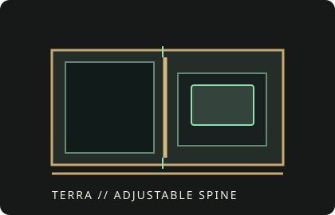

[ IDENTIFIED ENCLOSURE // 10.4 L ITX ]
Fractal Design Terra
343 × 153 × 218 mm (H × W × D), 10.4 L; compact Mini-ITX chassis with an adjustable central spine.

VARIANT / ARCHIVAL CAVEAT: The sliding spine reallocates room between GPU and CPU cooler. Color variants share the core fit concept; do not pair the independent maximum cooler and GPU envelopes.
Mechanical specifications and fit
| Catalog identity | Fractal Design Terra Mini-ITX case; Jade, Graphite and Silver finishes. |
|---|---|
| Dimensions / volume | 343 × 153 × 218 mm (H × W × D); 10.4 L. |
| Board and GPU | Mini-ITX motherboard; graphics cards up to about 322 mm long and 145 mm tall. Maximum GPU thickness depends on spine position and CPU-cooler envelope. |
| CPU cooling | Maximum CPU cooler height is approximately 77 mm with the spine moved toward the GPU side; available height falls as GPU thickness increases. |
| Radiator / PSU / bays | No conventional radiator mount; use low-profile air cooling. SFX/SFX-L PSU. Two 2.5-inch drive positions; check which positions remain usable with the chosen PSU and cables. |
| Revision / identification | Record the spine position and GPU/cooler dimensions for any validated build; side panels and ventilation orientation are important to thermal behavior. |
Compatibility notes
Terra is a volume-sharing design rather than a case with independent maximum GPU and cooler specifications. Measure the graphics card's width at its widest point, including backplate/shroud, and use the manufacturer's position diagram to set the spine. A long or thick card can force a shorter CPU cooler; the default panel-to-fan clearance should not be assumed sufficient for every GPU.
- Validate length, slot thickness and height against the exact GPU revision and PCIe power plug.
- Choose the cooler after setting the spine for the GPU; verify fan and side-panel clearance.
- Check the board's CPU socket position and M.2 heatsink dimensions against the low-profile cooler.
Manufacturer specifications and downloads
- Fractal Design Terra product specificationsOfficial product family page; dimensions and feature overview.
- Fractal Design official downloadsManufacturer manual and product documentation library.